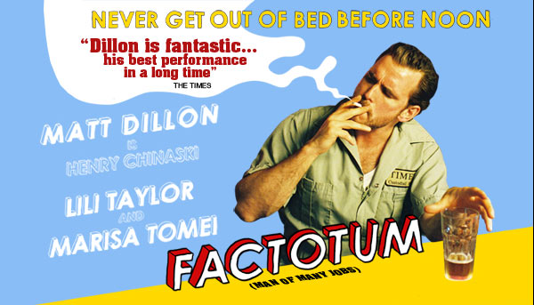

POSTS
[방구석영화제]삶의 가장자리 (Factotum, 2005)

If you are going to try,
go all the way.
시도를 해 볼 의향이 있으면,
모든 걸 시도하라.
Otherwise don’t even start.
그렇지 않으려면 시작도 하지 말라.
This could mean losing girlfriends,
wives, relatives, jobs.
그건 여자친구, 아내, 친척, 일자리를
잃을 수도 있다는 뜻이다.
And maybe your mind.
드리고 당신의 마음까지도.
It could mean
not eating for three or four days.
그건 3, 4일 씩
굶을 수도 있다는 뜻이다.
It could mean
freezing on a park bench.
공원 벤치에서 추위에 떨수도 있고,
It could mean jail.
감옥에 갈 수도 있다는 뜻이다.
It could mean mockery, isolation.
조롱이나, 고립을 의미할수도 있다.
Isolation is the gift. All the others
are a test of your endurance.
고립은 선물이다. 다른 모든것은
당신의 인내를 시험한다.
Of how much you really want to do it.
And you’ll do it, despite rejection.
당신이 그것을 얼마나 간절히 원하는지.
거부를 당해도 그 일을 할 것인지를.
And it will be better than
anything else you can imagine.
그리고 그것은 당신이 상상할 수 있는
그 어느것 보다도 더 좋을 것이다.
If you’re going to try,
go all the way.
시도를 할 의향이 있으면,
모든걸 시도하라.
There is no other feeling like that.
You will be alone with the gods.
어디에도 그런 느낌은 없다.
신과 마주하는 외로움이 있을 것이다.
And the nights will flame with fire.
밤은 불타오를 것이며.
You will ride life
straight to perfect laughter.
인생은 완전한 웃음으로 향할 것이다.
It’s the only good fight there is.
그곳엔 훌륭한 도전만이 있을 것이다.